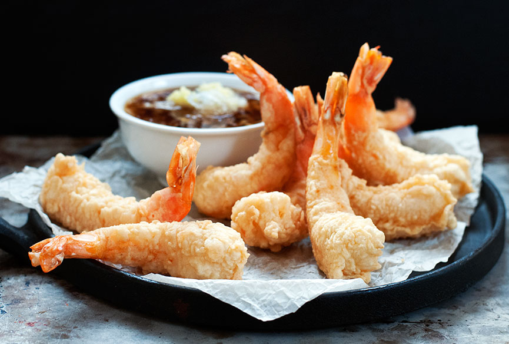
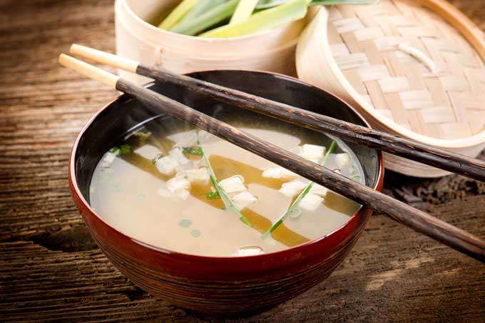
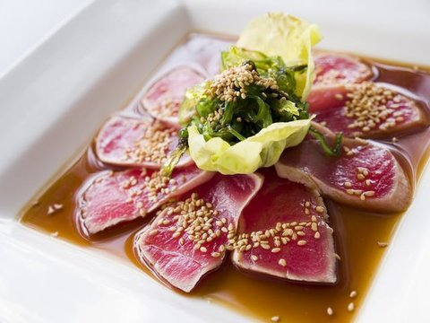
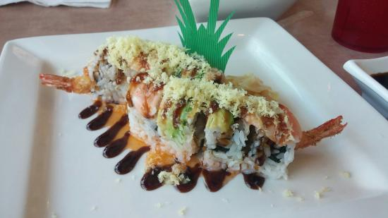

FUJI
About
Fuji Sushi Bar & Japanese Cuisine is a restaurant located within minutes of Auburn University's campus. Fuji has over 35 different sushi rolls, from non-raw sushi rolls to artistic, fresh maki. Fuji also has a range of sashimi dishes and combinations featuring over twenty kinds of fresh seafood.
First time for sushi? No worries. Our servers can suggest certain rolls for whatever your taste. We have completely vegetarian rolls, as well as non-raw and tempura rolls which are sure to please even the most skeptic inquirer.
Don't like sushi? Although we always say that there is a sushi roll for every customer that comes to our restaurant, we have many Japanese dishes for you. We have multiple selections of tempura and teriyaki combinations.
Fuji Sushi Bar aims to please every customer that comes in. Special requests are welcome for both sushi and Japanese cuisine dishes. Fuji also accepts reservations and now has gift cards available.
Contact
Call us at: (334) 887-7766
Message us at: contact@fujisushibar.com
Visit us in person:
1499 S. College St, Auburn AL 36832
Open in Google Maps
Menu
DISCLAIMER: This menu is not comprehensive, and should not be used as a substitute for Fuji's actual menu.
Appetizers
- Gyoza$4.95 Six pieces of fried Japanese pork dumplings with a light tempura dipping sauce.
- Edamame$3.25 Boiled soybeans served hot, with a sprinkle of salt.
- Shrimp Tempura$5.95  Six pieces of large shrimp, battered, rolled in crunchies, and tempura fried. Served with a special tempura dipping sauce.
- Golden Calamari$4.25 Lightly battered calamari rings, lightly fried and served with a special tempura dipping sauce.
- Vegetable Tempura$4.25 Six pieces of tempura-battered vegetables, lightly fried, served with a light tempura dipping sauce.
- Spring Rolls$3.25 Two spring rolls lightly fried crispy with a sweet spring roll sauce.
- Sushi Appetizer$6.25 Four pieces of a california roll and four pieces of Chef's choice nigiri sushi.
- Sashimi Appetizer$6.95 Six pieces of Chef's choice fresh fish from our sushi bar.
- Miso Soup$1.25  A light and brothy Japanese soup.
- Seaweed Salad$3.95 A salad made with wakame seaweed and sesame oil.
- House Ginger Salad$1.95 Our delicious house salad tossed with a special homemade creamy ginger dressing.
- Sunomono$3.95 Our large cucumber salad tossed in a very light, tangy dressing. Topped with crabmeat and shrimp.
Signature Dishes
- Beef Tataki$9.95 New York Strip, seared and served rare with our special ponzu sauce and cucumber slices.
- Tuna Tataki$10.95  Fresh tuna, seared and served rare with our special ponzu sauce and cucumber slices.
- Albacore Volcano$9.95 Fresh white tuna sashimi served over baby greens with a light and tangy dressing and spicy sauce.
- Salmon (Sake)$3.95
- Tuna (Maguro)$4.75
- Yellow Tail (Hamachi)$4.25
- BBQ Eels (Unagi)$4.25
- Red Snapper (Tai)$3.95
- White Tuna$3.95
- Shrimp (Ebi)$3.25
- Octopus (Taco)$3.95
- Smoked Salmon$3.95
- Smelt Roe (Masago)$3.95
- Crab Stick (Kani)$3.25
- Salmon Roe (Ikura0$4.25
- Squid (Ika)$3.95
- Mackerel (Saba)$3.25
- Surf Clam (Hokigai)$3.95
- Scallop (Hotate)$3.95
- Sweet Shrimp (Amaebi)$4.25
- Flying Fish Roe (Tobiko)$4.25
- Spicy Tuna$3.95 Seasoned spicy tuna on top of sushi rice.
- Snow Crab$3.95
Sushi Rolls
Our sushi rolls are wrapped in seasoned sushi rice and fresh seaweed.
child_care denotes a customer favorite.
- California Roll$4.95 Crabmeat, cucumber, avocado, with masago on the outside.
- California Salad Roll$4.75 Crabmeat salad, (Japanese Mayonnaise and crabmeat), cucumber, and avocado.
- Eel Roll$5.25 BBQ eel, avocado, and cucumber, topped with a sweet eel sauce.
- child_careShrimp Tempura Roll$5.75 Large tempura fried shrimp, light japanese mayo, scallion, topped with a sweet eel sauce.
- child_careSpicy Tuna Roll$5.25
- child_careCrunchy Shrimp Roll$5.25 Steamed avocado, and tempura crunchies.
- Spider Roll (5pcs)$6.25 Fried softshell crab, light Japanese mayo, avocado, and cucumber.
- Tiger Eyes Roll$5.75 Fresh tuna, cream cheese, avocado, and crabmeat.
- child_careAlaska Roll$5.25 Fresh raw salmon, crabmeat, and avocado.
- Philly Roll$5.25 Smoked salmon, cream cheese, and avocado.
- Salmon Skin Roll$4.25 Tempura fried salmon skin and cucumber with eel sauce on top.
- child_careSpicy Scallop Roll$5.25 Sashimi-grade raw scallops with a homemade spicy sauce and masago.
- Veggie Roll$3.95 A vegetarian roll with cucumber, avocado, babygreens, and carrot.
- child_careTempura Kamikaze Roll$6.95  Crabmeat, cream cheese, avocado inside. Outside is battered and lightly fried, topped with a sweet sauce.
 Tuna mixed with a special seasoning and tempura crunchies on the inside.
Tuna mixed with a special seasoning and tempura crunchies on the inside.
Lunch Specials
Our lunch specials are served Monday-Saturday until 2:30PM.
- Roll Combo$8.95 8-piece California roll, 6-piece tuna roll, 6-piece cucumber roll.
- California Combo$8.95 8-piece California roll and 5-piece Chef's choice nigiri sushi.
- Sushi & Sashimi Combo$11.25 California roll, 4-piece Chef's choice nigiri sushi, and assorted sashimi.
- Choice of Two Rolls$7.45 Choose from the list of rolls in the Sushi Rolls section.
- Choice of One Roll with Super Salad$5.25 Choose from the list of rolls in the Sushi Rolls section.
Served with choice of miso soup or ginger salad.
Served with choice of miso soup or ginger salad.
Served with choice of miso soup or ginger salad.
Served with a choice of miso soup or ginger salad.
Order
Ordering is currently handled through an external website. Please visit https://qmenu.us/#/fuji-sushi-bar-auburn to order online.